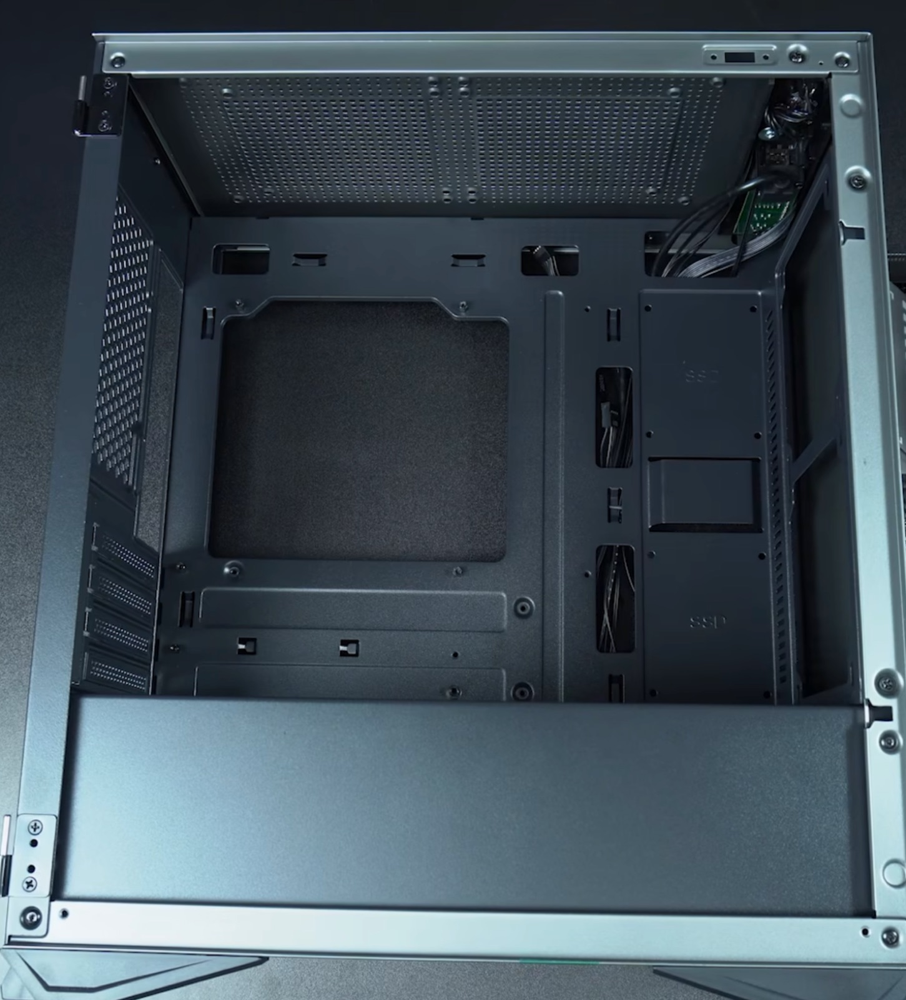
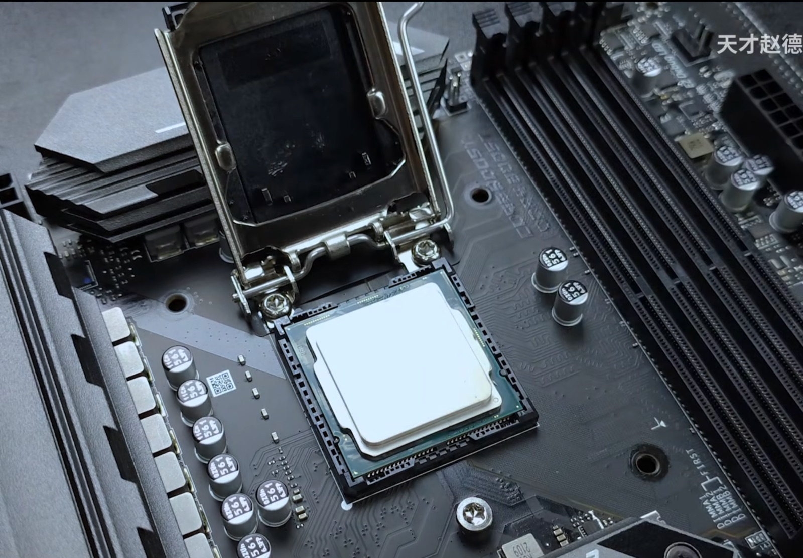
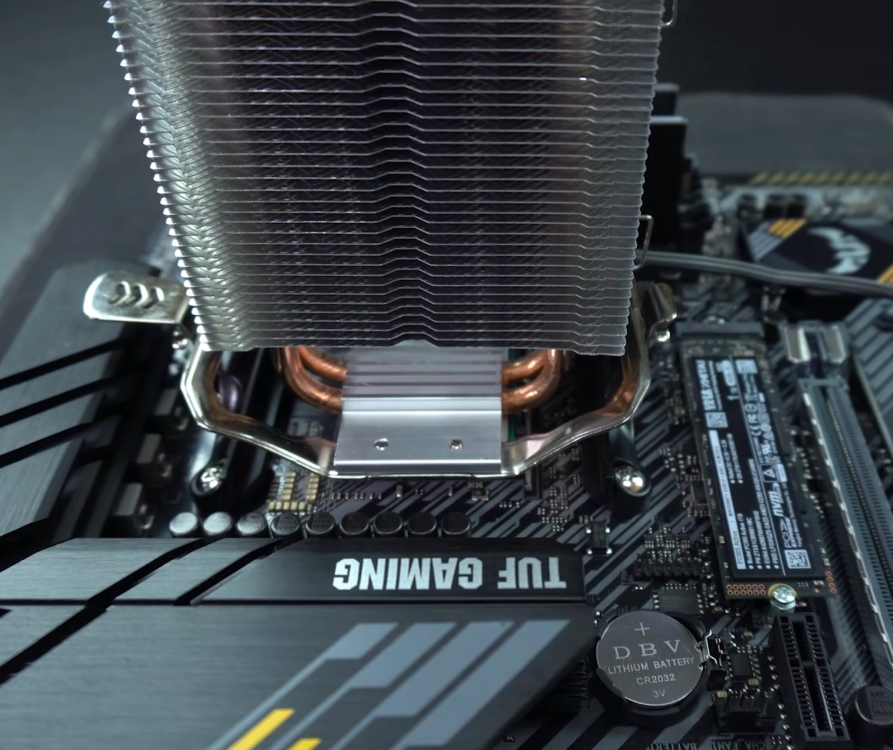
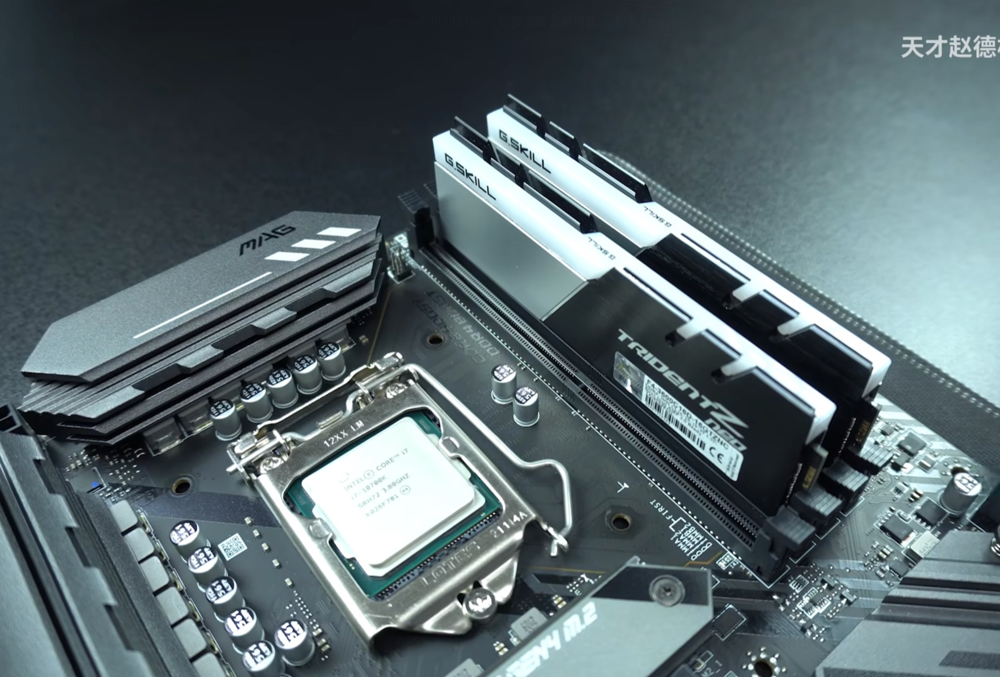
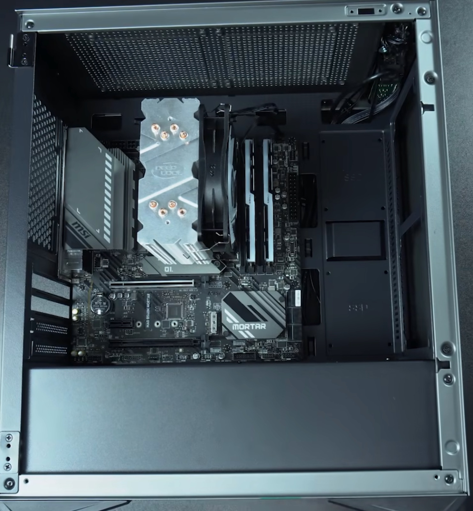
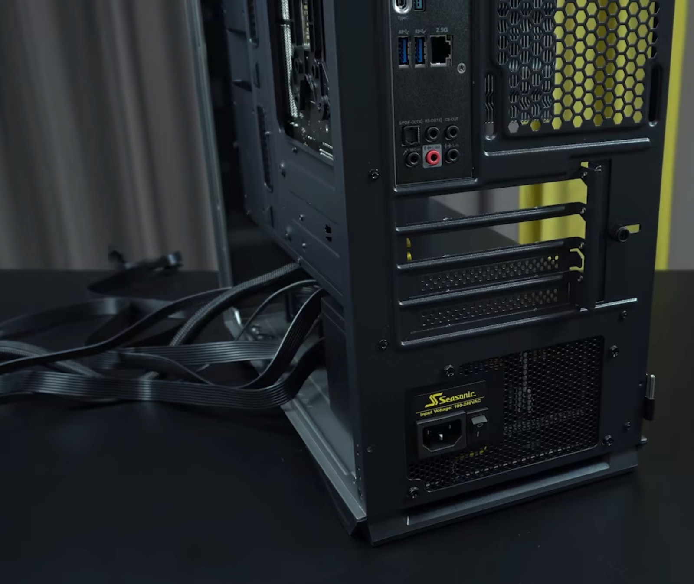
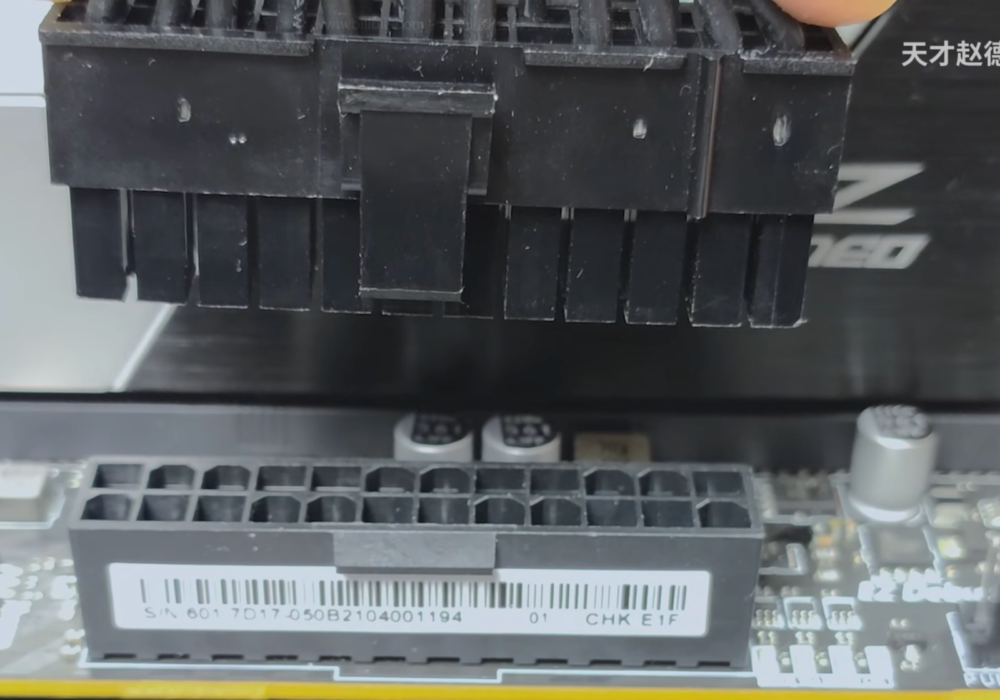
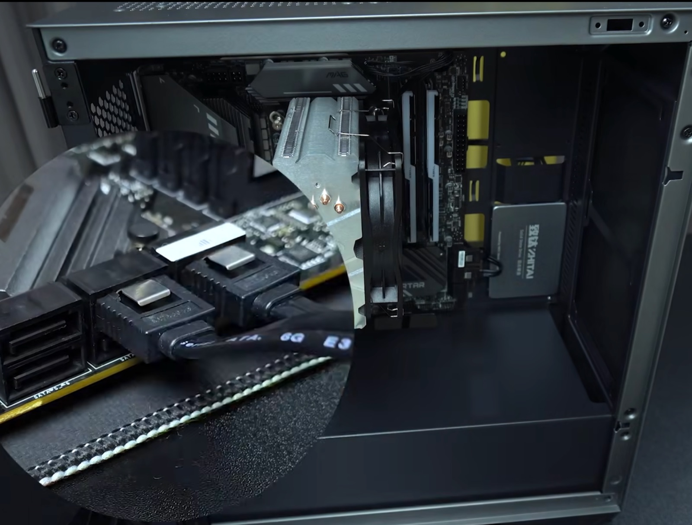
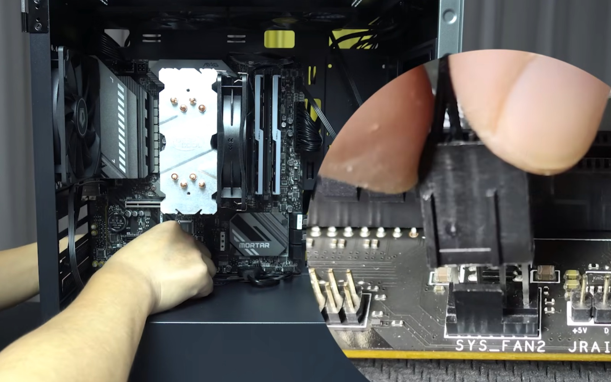
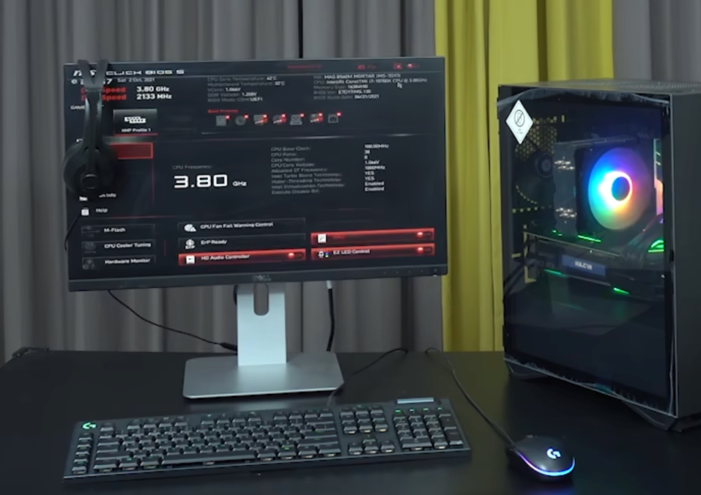

完全不通电
检查插座、电源线、电源背部开关、24-pin 供电、CPU 供电和 Power SW 位置。
Assembly Guide
每完成一步，先让同组成员检查，再进入下一步。遇到阻力时立即停止，不要用蛮力。
Safety Check
只有四项全部完成，才可以开始拆装。
12 Assembly Steps
点击每一步展开操作。页面中的照片位置会在补充对应图片后自动显示。











Final Checklist
Troubleshooting
每次只改变一项，再重新测试，这样才能知道哪一项解决了问题。
检查插座、电源线、电源背部开关、24-pin 供电、CPU 供电和 Power SW 位置。
检查显示器输入源、视频线接口、内存是否插紧；有独立显卡时确认视频线位置。
分别检查 SATA 数据线和 SATA 电源线，并在 BIOS 中查看硬盘是否被识别。
立即停止反复开机，检查散热器固定、硅脂、CPU_FAN 接线和 BIOS 温度。